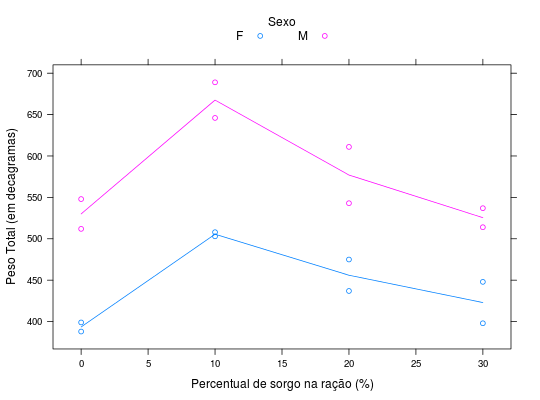

Ensaio de Torres e Pimentel-Gomes (1959) em que foram estudadas 4 rações para pintos dos dois sexos (machos e fêmeas), instalado um delineamento inteiramente casualizado com duas repetições. Cada parcela tinha inicialmente 13 aves, mas algumas morreram, de modo que, na pesagem final, com 4 semanas de idade, algumas parcelas contavam com 12 animais apenas.
Um data.frame com 16 observações e 4 variáveis, em que
sexosorgoanimaispesoPIMENTEL-GOMES (2009), Página 267.
Torres, A. P., Pimentel-Gomes, F. Substituição de subprodutos de trigo pelo sorgo moído na alimentação de pintos. Escola Superior de Agricultura "Luiz de Queiroz". Anais E.S.A. "Luiz de Queiroz" 16:251-76, 1959.
library(lattice) data(PimentelPg267)#> Warning: data set ‘PimentelPg267’ not foundstr(PimentelPg267)#> 'data.frame': 16 obs. of 4 variables: #> $ sexo : Factor w/ 2 levels "F","M": 2 2 2 2 2 2 2 2 1 1 ... #> $ sorgo : int 0 10 20 30 0 10 20 30 0 10 ... #> $ animais: int 13 13 13 13 13 13 13 13 12 13 ... #> $ peso : int 548 689 543 514 512 646 611 537 399 503 ...xyplot(peso ~ sorgo, data = PimentelPg267, groups = sexo, type = c("a", "p"), auto.key = list(title = "Sexo", cex.title = 1, columns = 2), ylab = "Peso Total (em decagramas)", xlab = "Percentual de sorgo na ração (%)")